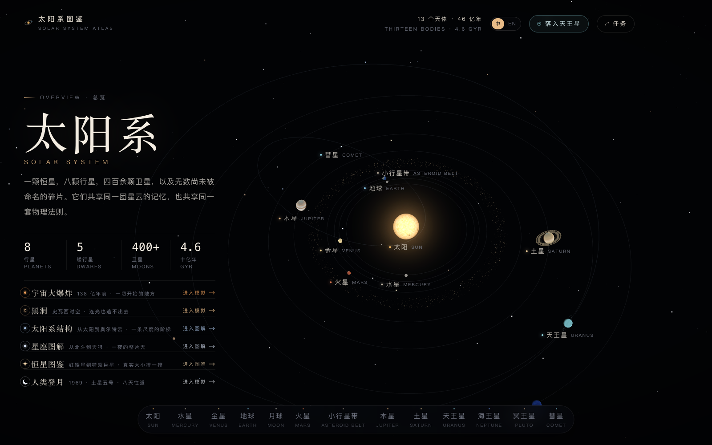
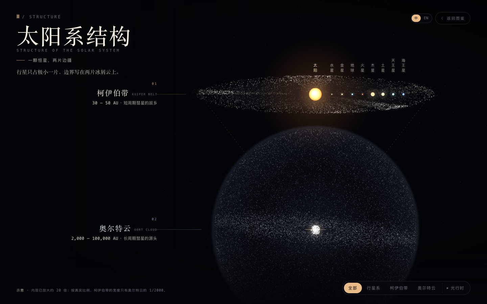
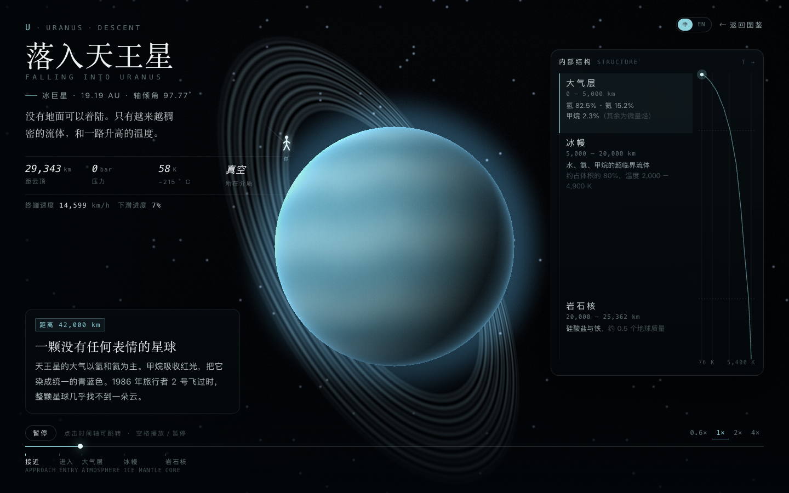
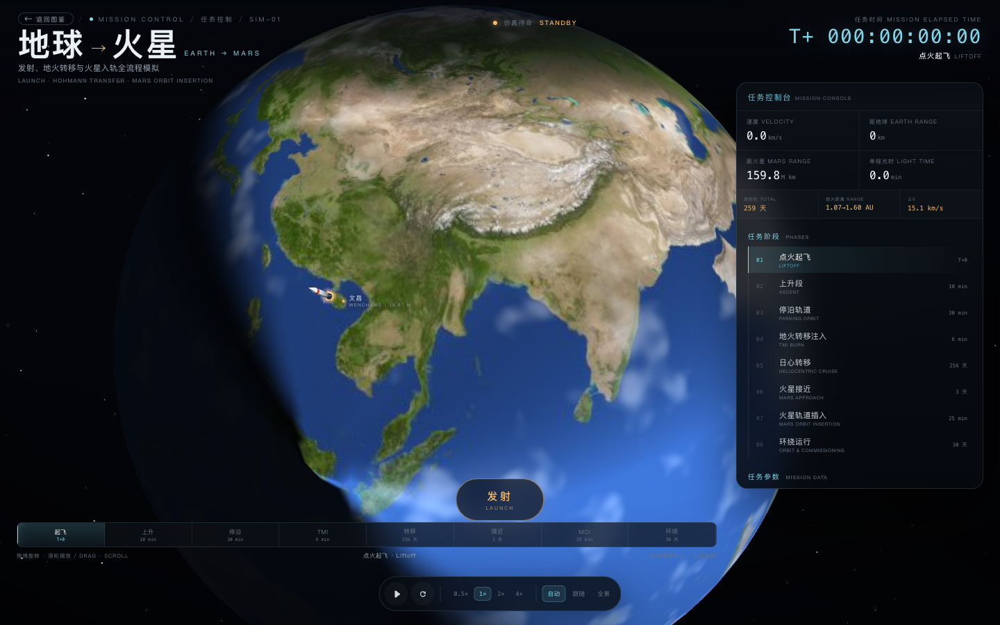

TOPIC / The Solar System
太阳系
认识八颗行星、太阳系的层次，并体验天王星下降与地火转移。
INTERACTIVE LESSONS
选择一个演示
从行星图鉴观察天体，再用太阳系结构理解尺度，并体验地火转移与天王星下降。

EXPLORE / 01太阳系行星图鉴
Solar System Atlas旋转、靠近并观察太阳与行星。
3D 漫游 · 天体资料打开演示
EXPLORE / 02太阳系结构
Structure of the Solar System从行星轨道走向柯伊伯带与奥尔特云。
尺度图解 · 光行时打开演示
EXPLORE / 03落入天王星
Falling into Uranus沿着探测器的下降路径，观察天王星的大气层。
交互模拟 · 大气分层打开演示
EXPLORE / 04地球到火星
Earth to Mars观察一次简化的地火转移任务。
轨道转移 · 任务时间打开演示